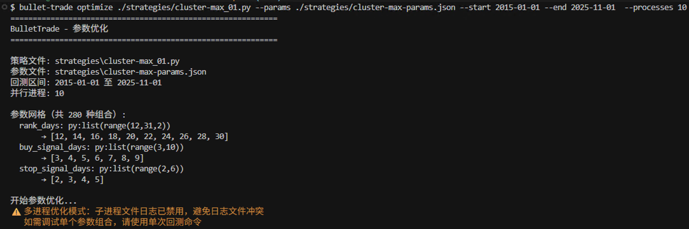

参数优化¶
多进程并行运行参数组合回测，自动找出最优策略参数。
快速上手¶
1. 准备参数配置文件¶
创建 params.json，定义需要优化的参数及其候选值：
{
"param_grid": {
"rank_days": [15, 20, 25, 30],
"buy_signal_days": [3, 4, 5, 6, 7],
"stop_signal_days": [2, 3, 4, 5]
}
}
param_grid中的键名必须与策略中g.xxx的属性名一致- 每个参数的值是一个数组，表示所有候选值
- 上例会生成
4 × 5 × 4 = 80种参数组合
2. 运行优化命令¶
bullet-trade optimize strategies/my_strategy.py \
--params params.json \
--start 2015-01-01 \
--end 2023-12-31 \
--output optimization_results.csv
3. 查看结果¶
优化完成后，结果按 收益回撤比（Calmar 比率） 降序排列，控制台输出 Top 10，完整结果保存到 CSV。
工作原理¶
┌─────────────────────────────────────────────────────────────┐
│ 1. 读取 params.json，展开所有参数组合 │
│ (rank_days=15, buy_signal_days=3, stop_signal_days=2) │
│ (rank_days=15, buy_signal_days=3, stop_signal_days=3) │
│ ...共 80 组 │
├─────────────────────────────────────────────────────────────┤
│ 2. 创建进程池，并行运行回测 │
│ ┌──────────┐ ┌──────────┐ ┌──────────┐ ┌──────────┐ │
│ │ 进程 1 │ │ 进程 2 │ │ 进程 3 │ │ 进程 N │ │
│ │ 组合 #1 │ │ 组合 #2 │ │ 组合 #3 │ │ 组合 #N │ │
│ └──────────┘ └──────────┘ └──────────┘ └──────────┘ │
├─────────────────────────────────────────────────────────────┤
│ 3. 每个回测流程： │
│ a) 调用策略 initialize(context) │
│ b) 系统自动用 extras 覆盖 g.xxx 参数 │
│ c) 正常执行回测 │
│ d) 计算风险指标 │
├─────────────────────────────────────────────────────────────┤
│ 4. 汇总结果，按收益回撤比排序，输出 CSV │
└─────────────────────────────────────────────────────────────┘
关键特性：策略代码 无需任何修改。系统会在 initialize() 执行后，自动用优化参数覆盖 g 上的对应属性。
命令行参数¶
bullet-trade optimize [-h] --params PARAMS --start START --end END
[--processes PROCESSES] [--output OUTPUT] strategy_file
| 参数 | 必填 | 说明 |
|---|---|---|
strategy_file |
✓ | 策略文件路径 |
--params |
✓ | 参数配置文件（JSON） |
--start |
✓ | 回测开始日期 |
--end |
✓ | 回测结束日期 |
--processes |
并行进程数（默认：CPU 核心数） | |
--output |
输出 CSV 文件路径（默认：当前目录） |
参数配置文件格式¶
{
"param_grid": {
"参数名1": [值1, 值2, 值3],
"参数名2": [值1, 值2],
"参数名3": [值1, 值2, 值3, 值4]
}
}
支持的值类型¶
{
"param_grid": {
"ma_days": [5, 10, 20, 30],
"threshold": [0.01, 0.02, 0.03],
"use_stop_loss": [true, false],
"strategy_type": ["momentum", "mean_revert"]
}
}
Python 表达式语法¶
参数值支持 "py:表达式" 语法，可以使用 Python 表达式动态生成参数列表，避免手动罗列大量数值：
{
"param_grid": {
"rank_days": "py:range(10, 35, 5)",
"threshold": "py:[x/100 for x in range(1, 10)]",
"ma_days": "py:list(range(5, 50, 5))"
}
}
上述配置等价于：
{
"param_grid": {
"rank_days": [10, 15, 20, 25, 30],
"threshold": [0.01, 0.02, 0.03, 0.04, 0.05, 0.06, 0.07, 0.08, 0.09],
"ma_days": [5, 10, 15, 20, 25, 30, 35, 40, 45]
}
}
支持的函数：range、list、int、float、round、abs、min、max、sum、len、sorted、reversed
常用示例：
| 表达式 | 结果 |
|---|---|
"py:range(1, 10)" |
[1, 2, 3, 4, 5, 6, 7, 8, 9] |
"py:range(10, 30, 5)" |
[10, 15, 20, 25] |
"py:[x/10 for x in range(5, 15)]" |
[0.5, 0.6, 0.7, ..., 1.4] |
"py:[round(x*0.01, 2) for x in range(1, 6)]" |
[0.01, 0.02, 0.03, 0.04, 0.05] |
示例：动量策略优化¶
策略中的参数：
def initialize(context):
g.rank_days = 20 # 排名动量天数
g.buy_signal_days = 5 # 买入信号天数
g.stop_signal_days = 3 # 止损信号天数
g.pool_update_days = 7 # 池子更新周期
对应的优化配置：
{
"param_grid": {
"rank_days": [10, 15, 20, 25, 30],
"buy_signal_days": [3, 4, 5, 6, 7, 8],
"stop_signal_days": [2, 3, 4, 5],
"pool_update_days": [5, 7, 10, 14]
}
}
输出结果说明¶
CSV 文件包含以下列：
| 列名 | 说明 |
|---|---|
| 各参数列 | 该组合使用的参数值 |
收益回撤比 |
Calmar 比率，年化收益 / 最大回撤 |
策略年化收益 |
年化收益率 |
最大回撤 |
最大回撤幅度 |
夏普比率 |
风险调整收益 |
胜率 |
盈利交易占比 |
耗时秒 |
该组合回测耗时 |
错误 |
若回测失败，记录错误信息 |
性能建议¶
控制组合数量¶
参数组合呈指数增长，建议先小范围探索：
{
"param_grid": {
"ma_days": [10, 20, 30],
"threshold": [0.01, 0.02]
}
}
指定进程数¶
若系统资源紧张，可限制并行进程：
bullet-trade optimize strategy.py --params params.json \
--start 2020-01-01 --end 2023-12-31 \
--processes 4 \
--output results.csv
分段回测¶
对于长周期优化，可分段运行后合并：
# 分段优化
bullet-trade optimize strategy.py --params params.json --start 2015-01-01 --end 2017-12-31 --output results_2015_2017.csv
bullet-trade optimize strategy.py --params params.json --start 2018-01-01 --end 2020-12-31 --output results_2018_2020.csv
bullet-trade optimize strategy.py --params params.json --start 2021-01-01 --end 2023-12-31 --output results_2021_2023.csv
完整示例¶
策略文件 my_momentum.py¶
from jqdata import *
def initialize(context):
set_benchmark('000300.XSHG')
set_option('use_real_price', True)
# 这些参数将被优化器覆盖
g.lookback = 20 # 回看天数
g.hold_days = 5 # 持有天数
g.top_n = 3 # 选股数量
run_daily(trade, '10:00')
def trade(context):
# 策略逻辑...
pass
参数配置 momentum_params.json¶
{
"param_grid": {
"lookback": [10, 15, 20, 25, 30],
"hold_days": [3, 5, 7, 10],
"top_n": [1, 2, 3, 5]
}
}
运行优化¶
bullet-trade optimize my_momentum.py \
--params momentum_params.json \
--start 2018-01-01 \
--end 2023-12-31 \
--output momentum_optimization.csv
运行优化示例：

输出示例¶
参数优化Top建议（按收益回撤比降序）：
lookback hold_days top_n 收益回撤比 策略年化收益 最大回撤 夏普比率
25 5 2 2.35 28.5% -12.1% 1.82
20 5 3 2.18 25.2% -11.6% 1.65
30 7 2 2.05 22.8% -11.1% 1.58
...
注意事项¶
- 参数命名：JSON 中的参数名必须与策略中
g.xxx属性名完全一致 - 默认值：策略中应设置合理的默认值，便于单独回测验证
- 过拟合风险：参数优化可能导致过拟合，建议在样本外数据验证最优参数
- 资源占用：多进程回测会占用大量 CPU 和内存，注意系统负载